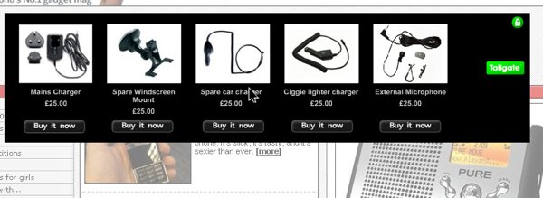
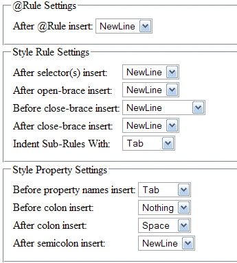
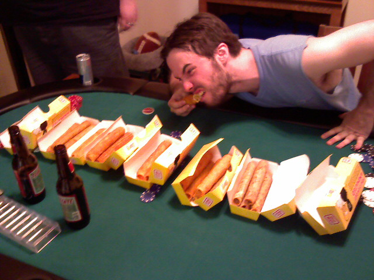
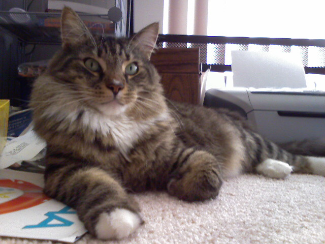
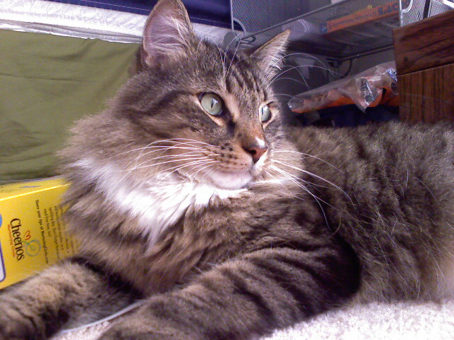
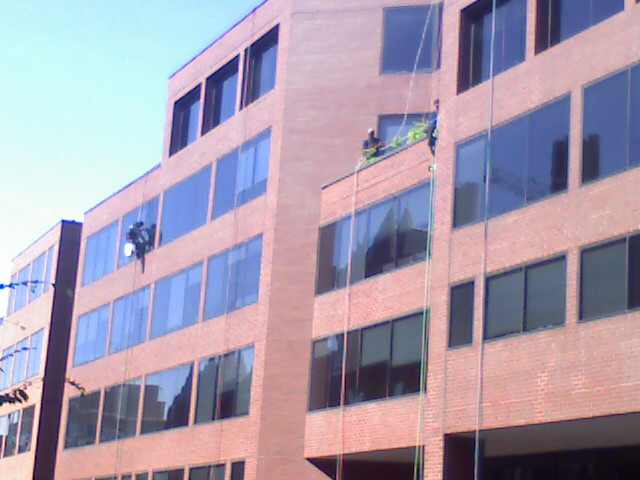

July 17th, 2007
Banner ads have been around on the web for ages but Tailgate wants to spruce these ancient advertisements. Utilizing AJAX, a user can purchase a product right inside the banner ad without clicking through to another site or leaving the page they are currently on. Take a look for yourself.
Tailgate benefits all parties involved…
- The customer gets what they want right away with little hassle.
- Advertisers make buying impulse items easier.
- The publisher retains their visitor while still profiting from the advertisement.

I think the publisher really benefits the most here because they can earn more money via this affiliate behavior which is more valuable than a simple click through. I hope there is still a good chunk of the web population that is not immune to banner ads since they easily can become invisible to repeat visitors.
There are also possibilities for security concerns as there is no way to ensure the credit card information entered is sent over a secure connection or if the company on the other end is even legitimate.
It is still nice to see some innovation in a space that has been dead to me for quite some time.
Posted at 10:34 am in Internet, Web | 2 Comments »
July 17th, 2007
In case you didn’t notice, today is July 17th, the day on the iCal icon. Weird isn’t it?

Update: It was on this day in 2002 that Apple released the original iCal application. (Thanks Chris!)
Posted at 2:12 am in Random Musings | 3 Comments »
July 16th, 2007
Organized code is easier to read/understand code. When coding you should always keep it as tidy as possible in case someone else (or even you) has to revisit it down the line. Smashing Magazine gathered the best tools to help you clean up your krufty code in various programming languages.

CSS Beautifier looks to be the best CSS optimizer mentioned by Smashing Magazine. You have complete control over the formatting of your style code including the ability to add a new line, space, tab or nothing after pretty much any CSS property. The best feature has got to be the Alphabetizer which will let you sort properties within a selector or the selectors themselves. Be careful with the last options because changing the order of your CSS selectors could change the way your CSS behaves on a site. Order is important in a cascading stylesheet.
My Great Free Online Beautifier for JavaScript does exactly that. There are no options to tweak but this handy tool takes your garbled JavaScript code and lines up the brackets and adds new lines for legibility where needed. Perfect for untangling those long lines of code that were squished down to a single line.
Obviously these two are the tips of the iceberg as Smashing Magazine has more tools for other languages. These two struck me as the most useful to a web developer and that is why they have made it in to my bookmarks of web goodies.
Posted at 10:34 pm in Coding, CSS/HTML | 2 Comments »
July 15th, 2007
These stupid blog chain quizzes are rather annoying, but for once I have been tagged (this time by Randall Bennett). So learn a thing or two about me below and check to see if you have been tagged.
Rules:
-
We have to post these rules before we give you the facts.
-
Players start with eight random facts/habits about themselves.
- People who are tagged write their own blog post about their eight things and include these rules.
- At the end of your blog post, you need to choose eight people to get tagged and list their names. Don�t forget to leave them a comment telling them they�re tagged and that they should read your blog.
Ready? Go.


- I am left handed.
- If you google “Russell Heimlich”, all 12,800 results are actually me.
- I listen to over 10 hours of podcasts every week during my morning commute.
- My diet consists mainly of cereal and Healthy Choice dinners.
- I entered college with the hopes of becoming a professional video editor. I left with a passion for web design which I learned on my own and I currently do for a living today.
- I have never met the Dr. Heimlich but I do know the Heimlich maneuver.
- I’m a firm believer in copy and paste.
- I’m a firm believer in copy and paste.
Now you know a few things about me, take a moment to find out about the following people. I tag…
Posted at 11:40 pm in Random Musings | 3 Comments »
July 15th, 2007

Josh was hungry and bought out a 7-11’s entire stock of taquitos. That’s 37 taquitos!
Posted at 1:30 am in Mobile Post | 3 Comments »
July 14th, 2007


He is named after the character from A Midsummer’s Night Dream.
Posted at 4:30 pm in Mobile Post | 2 Comments »
July 13th, 2007
I am part of the very select few (web designers/developers). That is why I get paid the big bucks!
Posted at 4:30 pm in Coding, CSS/HTML, Video | 1 Comment »
July 13th, 2007

… in a yellow jumpsuit no less. Bravo!
(via My Dark Lord Chris)
Posted at 12:29 pm in Photo, Random Musings | 1 Comment »
July 13th, 2007

A much better day to be outside compared to earlier this week.
Posted at 10:00 am in Mobile Post | No Comments »
July 12th, 2007
With my car in the shop I need to take the Metro to College Park in order to see Kristina.
Posted at 9:00 pm in Mobile Post | No Comments »